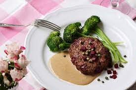

Beef and Broccoli

When it comes to healthy eating, there aren't many better recipes that Beef and Broccoli. With creative uses of cooking and seasoning it can be delicious as well.
Ingredients
- Ground Beef - Preferrably grass fed and not the premade patties.
- Broccoli - Fresh if possible but frozen will be fine.
- Butter - Unsalted
- Salt
- Pepper
- Your preferred seasoning for the beef
Steps
- Seperate out 4 oz of your chosen beef - unfrozen
- Trim the heads off of your broccoli until you have half a cup of broccoli. If you chose frozen precut Broccoli you can skip the prepping part and simply measure out half a cup.
- Boil, Steam, sautee or even microwave the broccoli until it is tender but not mushy.
- At the same time as the broccoli cooking, press the 4 oz of beef into a patty. From here if you have a George Foreman style grill, I recommend you use that. If not, you can pan fry or use a BBQ. I prefer to use my Blackstone griddle.
- Cook the beef patty until you start to see the patty begin to brown around the outside. Flip the patty and cook the other side until the internal temperature reaches 160 Degrees.
- Now that the Broccoli and Beef is cooked, plate these as shown in the picture and season to your liking. I like to use salt and pepper on both the broccoli and beef. I also like to put a slice of butter on the broccoli.
- ENJOY!